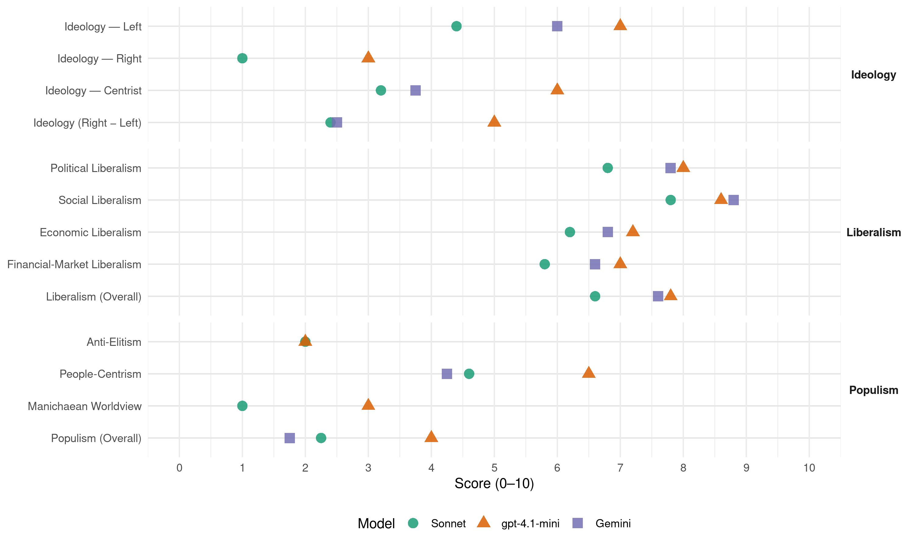

PL (Malta, 2017)
manifesto_id 54320_201706
Get full text: This site shows derived annotations and short verbatim quotes only. The full manifesto text is © Manifesto Project / WZB — obtain it via manifesto-project.wzb.eu using the manifesto_id above.
Headline scores
| Dimension | Sonnet | gpt-4.1-mini | Gemini |
|---|---|---|---|
| Populism (Overall) | 2.2 | 4.0 | 1.8 |
| Anti-Elitism | 2.0 | 2.0 | – |
| People-Centrism | 4.6 | 6.5 | 4.2 |
| Manichaean Worldview | 1.0 | 3.0 | – |
| Ideology (Right − Left) | 2.4 | 5.0 | 2.5 |
| Liberalism (Overall) | 6.6 | 7.8 | 7.6 |
| Political Liberalism | 6.8 | 8.0 | 7.8 |
| Social Liberalism | 7.8 | 8.6 | 8.8 |
| Economic Liberalism | 6.2 | 7.2 | 6.8 |
| Financial-Market Liberalism | 5.8 | 7.0 | 6.6 |
Evidence per dimension
Economic Liberalism
Gemini · score 8.0 · verified · chunk 1
“attitudni business-friendly”
Nibqgħu nkattru klima ekononomika u attitudni business-friendly li wasslet biex matul dawn l-erba’
Gemini · score 7.0 · verified · chunk 2
“flimkien mas-settur privat li jieħu”
Public Private Partneship u/jew Private Finance Initiative flimkien mas-settur privat li jieħu f’idejh il-manutenzjoni
Gemini · score 6.0 · verified · chunk 3
“kumpaniji li jaddottawha jingħataw inċentivi”
bil-ħsieb ukoll ikun li kumpaniji li jaddottawha jingħataw inċentivi fiskali.
Gemini · score 6.0 · verified · chunk 4
“jinvestu u jikkummerċjalizzaw il-faċiliajiet tagħhom”
Gvern Ġdid immexxi minn Joseph Muscat jagħti s-saħħa legali lill-Għaqdiet Sportivi jinvestu u jikkummerċjalizzaw il-faċiliajiet tagħhom bl-iskop li minn dawn
Gemini · score 7.0 · verified · chunk 5
“isir bi sħab mal-privat”
manutenzjoni preventiva u dan isir bi sħab mal-privat fuq KPIs maqbula minn qabel
gpt-4.1-mini · score 7.0 · verified · chunk 1
“naqqasna l-ispejjeż fosthom bit-traħħis fil-kontijiet tad-dawl u ilma u inċentivajna x-xogħol”
Matul dawn l-erba’ snin li għaddew, rajna żieda ta’ aktar minn 16,000 kumpanija li nħolqu, li tfisser kważi erba’ darbiet aktar iż-żieda li kienet inħolqot fil- leġislatura preċedenti. Ħallejna lin-negozji jaħdmu, kif wegħedna, naqqasna l-ispejjeż fosthom bit-traħħis fil-kontijiet tad-dawl u ilma u inċentivajna x-xogħol.
gpt-4.1-mini · score 8.0 · verified · chunk 2
“market, competition, business, enterprise, tax, trade, regulation, privatization”
…a verbatim quote must mention market, competition, business, enterprise, tax, trade, regulation, privatization, or related economic-policy terms.
gpt-4.1-mini · score 7.0 · verified · chunk 3
“kabbarna l-ekonomija u ħloqna l-ġid”
Stajna naslu biex inżidu l-paga minima għax kabbarna l-ekonomija u ħloqna l-ġid. Żammejna mal-wegħda tagħna li t-tkabbir ekonomiku jilħaq lil kulħadd.
gpt-4.1-mini · score 7.0 · verified · chunk 4
“inċentivi fiskali għal investimenti ġodda mis-settur privat”
Noħolqu wkoll inċentivi fiskali għal investimenti ġodda mis-settur privat fl-infrastruttura kulturali inkluż studios, teatri, swali tal-mużika u mużewijiet.
gpt-4.1-mini · score 7.0 · verified · chunk 5
“Dan ikun ħolqa oħra f’inizjattivi biex nagħmlu Servizz Pubbliku aktar modern, effiċjenti u wieħed li mhux biss ilaħħaq imma jkun xprun proattiv għall-progress ekonomiku ta’ pajjiżna”
Nibdew konsultazzjoni wiesgħa li għandha twassal biex nintroduċu Accountability Charter għall-ħaddiema kollha tas-Servizz Pubbliku bil-għan li nrawmu aktar il-kultura tal-kontabbiltà u ndaħħlu iżjed sens ta’ immedjatezza fil-mod kif jopera ċ-Ċivil fl-interess taċ-ċittadini u n-negozji. Dan ikun ħolqa oħra f’inizjattivi biex nagħmlu Servizz Pubbliku aktar modern, effiċjenti u wieħed li mhux biss ilaħħaq imma jkun xprun proattiv għall-progress ekonomiku ta’ pajjiżna.
Sonnet · score 7.0 · verified · chunk 1
“klima ekononomika u attitudni business-friendly”
Nibqgħu nkattru klima ekononomika u attitudni business-friendly li wasslet biex matul dawn l-erba’ snin li għaddew tat nifs ġdid lin-negozji
Sonnet · score 6.0 · verified · chunk 2
“inċentivi fiskali lill-kumpaniji”
12. Nagħtu inċentivi fiskali lill-kumpaniji li jiżviluppaw huma stess sistemi ta’ shared transport u car pooling
Sonnet · score 6.0 · verified · chunk 3
“inċentivi fiskali għall-employers li jwaqqfu pensjoni”
Nibqgħu noffru inċentivi fiskali għall-employers li jwaqqfu pensjoni privata għall-impjegati tagħhom.
Sonnet · score 6.0 · verified · chunk 4
“l-industrija kreattiva fil-qasam tal mużika moderna topera mingħajr xkiel”
naċċertaw li nħallu l-industrija kreattiva fil-qasam tal mużika moderna topera mingħajr xkiel ħalli nkomplu niżviluppaw it-talent Malti
Sonnet · score 6.0 · verified · chunk 5
“progress ekonomiku ta’ pajjiżna”
nagħmlu Servizz Pubbliku aktar modern, effiċjenti u wieħed li mhux biss ilaħħaq imma jkun xprun proattiv għall-progress ekonomiku ta’ pajjiżna
Financial-Market Liberalism
Gemini · score 7.0 · verified · chunk 1
“kreditu mill-banek kummerċjali”
medju, ikollhom aċċess ġust għal kreditu mill-banek kummerċjali. Għal dan l-iskop ser inkunu
Gemini · score 6.0 · verified · chunk 2
“potenzjal ta’ tfaddil għall-pensjonijiet privati”
fejn għarafna l-bżonn li ntejbu l-potenzjal ta’ tfaddil għall-pensjonijiet privati billi daħħalna diversi inċentivi
Gemini · score 6.0 · verified · chunk 3
“depożiti f’banek, interessi fuq bonds”
investimenti li huma jagħmlu bħal ma huma depożiti f’banek, interessi fuq bonds u stocks etc.)
Gemini · score 7.0 · verified · chunk 4
“arranġamenti mal-banek lokali bil-għan”
Sabiex intaffu dan il-piż, nidħlu f’arranġamenti mal-banek lokali bil-għan li jingħata moratorium fuq
Gemini · score 7.0 · verified · chunk 5
“Trade Financing Facility”
proġetti ta’ Centre of Excellence for Small States u t-Trade Financing Facility bħala proġetti
gpt-4.1-mini · score 7.0 · verified · chunk 1
“Nassiguraw li n-negozji, partikolarment dawk ta’ daqs żgħir u medju, ikollhom aċċess ġust għal kreditu mill-banek kummerċjali”
Fi ħdan il-Malta Enterprise titwaqqaf unit speċifika li tiffoka fuq l-għajnuna li tingħata lill-negozji żgħar u ta’ daqs medju partikolarment fit-twettiq ta’ proġetti innovattivi mmirati lejn żvilupp ta’ servizzi u prodotti ġodda. Nassiguraw li n-negozji, partikolarment dawk ta’ daqs żgħir u medju, ikollhom aċċess ġust għal kreditu mill-banek kummerċjali.
gpt-4.1-mini · score 7.0 · verified · chunk 2
“finance, bank, capital, credit, invest, market, monetary, interest rate, currency, debt, securities”
…a verbatim quote must mention finance, bank, capital, credit, invest, market, monetary, interest rate, currency, debt, securities, or related financial-system terms.
Sonnet · score 6.0 · verified · chunk 1
“aċċess ġust għal kreditu mill-banek”
Nassiguraw li n-negozji, partikolarment dawk ta’ daqs żgħir u medju, ikollhom aċċess ġust għal kreditu mill-banek kummerċjali.
Sonnet · score 6.0 · verified · chunk 2
“strumenti finanzjarji bħal EFSI”
ikun iffinanzjat permezz ta’ public-private partnership mal-privat kif ukoll permezz ta’ strumenti finanzjarji bħal EFSI.
Sonnet · score 5.0 · verified · chunk 3
“interessi fuq bonds u stocks”
neżentawhom mill-final withholding tax ta’ 15% sa massimu ta’ ewro 1,000 fuq interessi fis-sena fuq investimenti bħal depożiti f’banek, interessi fuq bonds u stocks etc.
Sonnet · score 6.0 · verified · chunk 4
“kontijiet bankarji fuq il-kunċett ta’ Property ISAs”
Il-Gvern jidħol f’arranġament mal-banek, sabiex jinħolqu kontijiet bankarji fuq il-kunċett ta’ Property ISAs. Dawn ikollhom il-vantaġġ li depożiti f’dawn il-kontijiet ma jġorrux imgħax fuq l-interessi
Sonnet · score 6.0 · verified · chunk 5
“self b’rati tal-imgħax vantaggużi”
Permezz ta Trade Financing Facility pajjiżi żgħar jingħataw faċilitajiet finanzjarji bħal-self b’rati tal-imgħax vantaggużi għall-iżvilupp tagħhom
Political Liberalism
Gemini · score 8.0 · verified · chunk 1
“it-twelid tat-Tieni Repubblika”
Għalhekk inħarsu lejn it-twelid tat-Tieni Repubblika. Ambizzjoni nazzjonali li rridu nwettquha
Gemini · score 7.0 · verified · chunk 2
“b’mod bi-partisan bil-għan li tittieħed”
jiftaħ proċess ta’ konsultazzjoni wiesgħa, b’mod bi-partisan bil-għan li tittieħed l-aħjar deċiżjoni
Gemini · score 7.0 · verified · chunk 3
“id-Drittijiet tat-Tfal tiddaħħal fil-liġi”
Il-Konvenzjoni tal-Ġnus Maqgħuda dwar id-Drittijiet tat-Tfal tiddaħħal fil-liġi Maltija.
Gemini · score 8.0 · verified · chunk 4
“kolonna ewlenija tad-demokrazija tagħna”
hekk ukoll il-Qorti, bħala kolonna ewlenija tad-demokrazija tagħna, għandha tikseb l-awtonomija
Gemini · score 9.0 · verified · chunk 5
“tiggarantixxi c-checks and balances”
Il-Kostituzzjoni tagħna tiggarantixxi c-checks and balances neċessarji biex tissalvagwardja l-interessi
gpt-4.1-mini · score 8.0 · verified · chunk 1
“democracy u l-ġustizzja soċjali jiddefinixxina u jiddistingwina”
Għalina l-prinċipju tal-ġustizzja soċjali jiddefinixxina u jiddistingwina minn ħaddieħor. Il-ġid li jinħoloq irriduh jasal għand kulħadd. Biex ħadd ma jibqa’ lura. Mhux b’empatija biss, iżda fuq kollox bi dritt. Hekk nemmnu aħna.
gpt-4.1-mini · score 7.0 · verified · chunk 2
“democracy, rights, elections, courts, media, government, parliament”
…a verbatim quote must mention democracy, rights, elections, courts, media, government, parliament, or a related political-institution term.
gpt-4.1-mini · score 8.0 · verified · chunk 3
“Il-Konvenzjoni tal-Ġnus Maqgħuda dwar id- Drittijiet tat-Tfal tiddaħħal fil-liġi Maltija”
Il-Konvenzjoni tal-Ġnus Maqgħuda dwar id- Drittijiet tat-Tfal tiddaħħal fil-liġi Maltija. 41. Jiħraxu l-pieni relatati ma’ pedofelija jew abbuż tat-tfal.
gpt-4.1-mini · score 8.0 · verified · chunk 4
“Il-Parlament kiseb l-awtonomija amministrattiva tiegħu”
Bl-istess mod li l-Parlament kiseb l-awtonomija amministrattiva tiegħu, hekk ukoll il-Qorti, bħala kolonna ewlenija tad-demokrazija tagħna, għandha tikseb l-awtonomija amministrattiva tagħha. Dan waqt li jissaħħu d-drittijiet tal-ħaddiema kollha li jaħdmu fid-Dipartiment tal-Qrati tal-Ġustizzja.
gpt-4.1-mini · score 9.0 · verified · chunk 5
“Il-Kostituzzjoni tagħna tiggarantixxi c-checks and balances neċessarji biex tissalvagwardja l-interessi tal-poplu u biex pajjiżna jiffunzjona tajjeb ħafna bħala demokrazija moderna”
Pajjiżna għandu istituzzjonjiet b’saħħithom. Il-Kostituzzjoni tagħna tiggarantixxi c-checks and balances neċessarji biex tissalvagwardja l-interessi tal-poplu u biex pajjiżna jiffunzjona tajjeb ħafna bħala demokrazija moderna. Dan m’għandu qatt ikun imfixkel. Għalhekk Gvern Ġdid jibqà impenjat li jsaħħaħ l-istituzzjonijet.
Sonnet · score 7.0 · verified · chunk 1
“pajjiżna jagħmel il-qabża liberali”
Għalhekk ser nagħmlu aktar riformi li jwasslu biex pajjiżna jagħmel il-qabża liberali li jmiss.
Sonnet · score 6.0 · verified · chunk 2
“tiddaħħal fil-Kostituzzjoni”
filwaqt li jkun ikkunsidrat ukoll li tiddaħħal fil-Kostituzzjoni. L-Awtorità tkun tilqa’ fiha firxa wiesgħa tal-imsieħba soċjali Għawdxin.
Sonnet · score 6.0 · verified · chunk 3
“ma nagħmlux mill-edukazzjoni ballun politiku partiġġjan”
inġeddu l-impenn tagħna li ma nagħmlux mill-edukazzjoni ballun politiku partiġġjan. F’dan il-qasam irridu naħdmu ma’ kulħadd
Sonnet · score 7.0 · verified · chunk 4
“il-Qorti, bħala kolonna ewlenija tad-demokrazija”
il-Qorti, bħala kolonna ewlenija tad-demokrazija tagħna, għandha tikseb l-awtonomija amministrattiva tagħha
Sonnet · score 8.0 · verified · chunk 5
“checks and balances neċessarji biex tissalvagwardja”
Il-Kostituzzjoni tagħna tiggarantixxi c-checks and balances neċessarji biex tissalvagwardja l-interessi tal-poplu u biex pajjiżna jiffunzjona tajjeb ħafna bħala demokrazija moderna
Liberalism (Overall)
Gemini · score 8.0 · verified · chunk 1
“pajjiżna jagħmel il-qabża liberali”
Għalhekk ser nagħmlu aktar riformi li jwasslu biex pajjiżna jagħmel il-qabża liberali li jmiss.
Gemini · score 7.0 · verified · chunk 2
“flimkien mas-settur privat li jieħu”
Public Private Partneship u/jew Private Finance Initiative flimkien mas-settur privat li jieħu f’idejh il-manutenzjoni
Gemini · score 7.0 · verified · chunk 3
“drittijiet ta’ persuni b’diżabiltà tiġi”
liġijiet oħrajn li jikkonċernaw drittijiet ta’ persuni b’diżabiltà tiġi osservata u infurzata.
Gemini · score 8.0 · verified · chunk 4
“persuni LGBTIQ għandhom l-aqwa drittijiet”
Malta llum hija differenti minn erba’ snin ilu. Illum, persuni LGBTIQ għandhom l-aqwa drittijiet fl-Ewropa. Illum għandna soċjetà
Gemini · score 8.0 · verified · chunk 5
“tiggarantixxi c-checks and balances”
Il-Kostituzzjoni tagħna tiggarantixxi c-checks and balances neċessarji biex tissalvagwardja l-interessi
gpt-4.1-mini · score 7.0 · verified · chunk 1
“naqqasna l-ispejjeż fosthom bit-traħħis fil-kontijiet tad-dawl u ilma u inċentivajna x-xogħol”
Matul dawn l-erba’ snin li għaddew, rajna żieda ta’ aktar minn 16,000 kumpanija li nħolqu, li tfisser kważi erba’ darbiet aktar iż-żieda li kienet inħolqot fil- leġislatura preċedenti. Ħallejna lin-negozji jaħdmu, kif wegħedna, naqqasna l-ispejjeż fosthom bit-traħħis fil-kontijiet tad-dawl u ilma u inċentivajna x-xogħol.
gpt-4.1-mini · score 7.0 · verified · chunk 2
“democracy, rights, elections, courts, media, government, parliament”
…a verbatim quote must mention democracy, rights, elections, courts, media, government, parliament, or a related political-institution term.
gpt-4.1-mini · score 8.0 · verified · chunk 3
“Il-Konvenzjoni tal-Ġnus Maqgħuda dwar id- Drittijiet tat-Tfal tiddaħħal fil-liġi Maltija”
Il-Konvenzjoni tal-Ġnus Maqgħuda dwar id- Drittijiet tat-Tfal tiddaħħal fil-liġi Maltija. 41. Jiħraxu l-pieni relatati ma’ pedofelija jew abbuż tat-tfal.
gpt-4.1-mini · score 8.0 · verified · chunk 4
“Il-Parlament kiseb l-awtonomija amministrattiva tiegħu”
Bl-istess mod li l-Parlament kiseb l-awtonomija amministrattiva tiegħu, hekk ukoll il-Qorti, bħala kolonna ewlenija tad-demokrazija tagħna, għandha tikseb l-awtonomija amministrattiva tagħha. Dan waqt li jissaħħu d-drittijiet tal-ħaddiema kollha li jaħdmu fid-Dipartiment tal-Qrati tal-Ġustizzja.
gpt-4.1-mini · score 9.0 · verified · chunk 5
“Il-Kostituzzjoni tagħna tiggarantixxi c-checks and balances neċessarji biex tissalvagwardja l-interessi tal-poplu u biex pajjiżna jiffunzjona tajjeb ħafna bħala demokrazija moderna”
Pajjiżna għandu istituzzjonjiet b’saħħithom. Il-Kostituzzjoni tagħna tiggarantixxi c-checks and balances neċessarji biex tissalvagwardja l-interessi tal-poplu u biex pajjiżna jiffunzjona tajjeb ħafna bħala demokrazija moderna. Dan m’għandu qatt ikun imfixkel. Għalhekk Gvern Ġdid jibqà impenjat li jsaħħaħ l-istituzzjonijet.
Sonnet · score 7.0 · verified · chunk 1
“pajjiżna jagħmel il-qabża liberali”
Għalhekk ser nagħmlu aktar riformi li jwasslu biex pajjiżna jagħmel il-qabża liberali li jmiss.
Sonnet · score 6.0 · verified · chunk 2
“inċentivi fiskali lill-kumpaniji”
12. Nagħtu inċentivi fiskali lill-kumpaniji li jiżviluppaw huma stess sistemi ta’ shared transport u car pooling
Sonnet · score 6.0 · verified · chunk 3
“l-aċċess għal saqaf dinjituż fuq rasek huwa dritt fundamentali”
Aħna nemmnu li l-aċċess għal saqaf dinjituż fuq rasek huwa dritt fundamentali li m’għandux ikun imxekkel.
Sonnet · score 7.0 · verified · chunk 4
“persuni LGBTIQ għandhom l-aqwa drittijiet fl-Ewropa”
Malta llum hija differenti minn erba’ snin ilu. Illum, persuni LGBTIQ għandhom l-aqwa drittijiet fl-Ewropa. Illum għandna soċjetà miftuħa li ma tagħmilx distinzjoni bejn il-persuni
Sonnet · score 7.0 · verified · chunk 5
“persuni LGBTIQ għandhom l-aqwa drittijiet”
Illum, persuni LGBTIQ għandhom l-aqwa drittijiet fl-Ewropa. Illum għandna soċjetà miftuħa li ma tagħmilx distinzjoni bejn il-persuni.
Anti-Elitism
gpt-4.1-mini · score 2.0 · verified · chunk 1
“Poplu magħqud wara bandiera waħda, nevitaw dak li jifridna”
Għalina int bniedem. L-umanità tiegħek m’għandu jisraqhielek ħadd u l-Istat għandu jserraħlek rasek minn hekk. Għalhekk ser nagħmlu aktar riformi li jwasslu biex pajjiżna jagħmel il-qabża liberali li jmiss. Fuq kollox nemmnu fl-għaqda. Poplu magħqud jagħmel pajjiż b’saħħtu. Poplu magħqud wara bandiera waħda, nevitaw dak li jifridna filwaqt li nibnu soċjetà li taħseb f’kulħadd.
gpt-4.1-mini · score 2.0 · verified · chunk 3
“Nemmnu fi Stat li għandu jwieżen lil min għandu l-aktar bżonn”
SOĊJETÀ LI TAĦSEB F’KULĦADD Nemmnu fi Stat li għandu jwieżen lil min għandu l-aktar bżonn. Għal Gvern Ġdid immexxi minn Joseph Muscat, il-Ġustizzja Soċjali tibqa’ valur ewlieni.
Sonnet · score 2.0 · verified · chunk 1
“l-partiġġjaniżmu politiku”
Ambizzjoni nazzjonali li rridu nwettquha flimkien, bil-parteċipazzjon tal-ħafna u ’l fuq mill-partiġġjaniżmu politiku.
Sonnet · score 2.0 · mixed · chunk 2
“mudell li ma ħadimx”
Sa issa, din is-sistema tmexxiet mill-privat – dan mudell li ma ħadimx. L-aspett tal-ordni pubblika
Sonnet · score 2.0 · verified · chunk 5
“il-poplu jixtieq jara aktar inizjattivi”
xorta jinħass li l-poplu jixtieq jara aktar inizjattivi u deċiżjonijiet konkreti f’dan il-qasam
Ideology — Centrist
Gemini · score 5.0 · verified · chunk 1
“Poplu magħqud jagħmel pajjiż b’saħħtu”
Fuq kollox nemmnu fl-għaqda. Poplu magħqud jagħmel pajjiż b’saħħtu. Poplu magħqud wara bandiera waħda
Gemini · score 4.0 · verified · chunk 2
“lin-nies li jużawhom u jgħixu fihom”
jinżammu kif jixraq lil pajjiż modern u lin-nies li jużawhom u jgħixu fihom. Dan l-investiment fit-toroq
Gemini · score 2.0 · verified · chunk 3
“it-tkabbir ekonomiku jilħaq lil kulħadd”
Żammejna mal-wegħda tagħna li it-tkabbir ekonomiku jilħaq lil kulħadd. Hekk irridu nkomplu nagħmlu.
Gemini · score 4.0 · verified · chunk 5
“tissalvagwardja l-interessi tal-poplu”
checks and balances neċessarji biex tissalvagwardja l-interessi tal-poplu u biex pajjiżna jiffunzjona tajjeb
gpt-4.1-mini · score 6.0 · verified · chunk 1
“bil-parteċipazzjon tal-ħafna u ‘l fuq mill-partiġġjaniżmu politiku”
Għalhekk inħarsu lejn it-twelid tat-Tieni Repubblika. Ambizzjoni nazzjonali li rridu nwettquha flimkien, bil-parteċipazzjon tal-ħafna u ‘l fuq mill-partiġġjaniżmu politiku. Ser infittxu l-għaqda nazzjonali dejjem, f’kull ħin.
gpt-4.1-mini · score 6.0 · verified · chunk 3
“Nemmnu li rridu livell tal-għejxien aħjar għal kulħadd”
TITJIB FIL-PAGA MINIMA U LIVING INCOME Għax nemmnu li rridu livell tal-għejxien aħjar għal kulħadd, ħdimna u stinkajna biex il-paga minima żdiedet għall-ewwel darba lil hinn miż-żieda normali għall-għoli tal-ħajja.
Sonnet · score 4.0 · verified · chunk 1
“konsensus politiku fil-viżjoni tagħna”
Għalhekk ser inkomplu nsostnu u nfittxu, kif dejjem għamilna, konsensus politiku fil-viżjoni tagħna għal Malta
Sonnet · score 3.0 · verified · chunk 2
“Gvern Ġdid immexxi minn Joseph Muscat”
Għalhekk Gvern ġdid immexxi minn Joseph Muscat ser jagħti prijorità bla preċedent lill-iżvilupp infrastrutturali
Sonnet · score 3.0 · verified · chunk 3
“Gvern Ġdid immexxi minn Joseph Muscat”
Gvern Ġdid immexxi minn Joseph Muscat, il-Ġustizzja Soċjali tibqa’ valur ewlieni. Prinċipju fundamentali mnaqqax f’kull deċiżjoni
Sonnet · score 3.0 · verified · chunk 4
“Gvern Ġdid immexxi minn Joseph Muscat”
Gvern Ġdid immexxi minn Joseph Muscat huwa impenjat li jindirizza din il-problema u mhux jaħrabha
Sonnet · score 3.0 · verified · chunk 5
“Gvern li jisma’”
Matul dawn l-erba’ snin konna Gvern li jisma’. Ersaqna eqreb lejn iċ-ċittadin.
Ideology — Left
Gemini · score 6.0 · verified · chunk 3
“il-Ġustizzja Soċjali tibqa’ valur ewlieni”
Għal Gvern Ġdid immexxi minn Joseph Muscat, il-Ġustizzja Soċjali tibqa’ valur ewlieni. Prinċipju fundamentali mnaqqax
gpt-4.1-mini · score 7.0 · verified · chunk 1
“Il-ġustizzja soċjali tfisser il-ħolqien ta’ soċjetà li taħseb f’kulħadd”
Għalina l-prinċipju tal-ġustizzja soċjali jiddefinixxina u jiddistingwina minn ħaddieħor. Il-ġid li jinħoloq irriduh jasal għand kulħadd. Biex ħadd ma jibqa’ lura. Mhux b’empatija biss, iżda fuq kollox bi dritt. Hekk nemmnu aħna. Li nwieżnu lil min għandu bżonn l-aktar.
gpt-4.1-mini · score 7.0 · verified · chunk 3
“il-Ġustizzja Soċjali tibqa’ valur ewlieni”
SOĊJETÀ LI TAĦSEB F’KULĦADD Nemmnu fi Stat li għandu jwieżen lil min għandu l-aktar bżonn. Għal Gvern Ġdid immexxi minn Joseph Muscat, il-Ġustizzja Soċjali tibqa’ valur ewlieni.
Sonnet · score 5.0 · verified · chunk 1
“equal pay for equal work”
Il-kunċett ta’ equal pay for equal work huwa valur fundamentali ta’ ġustizzja li aħna nemmnu fih.
Sonnet · score 4.0 · verified · chunk 2
“il-paga minima żdiedet għall-ewwel darba”
ħdimna u stinkajna biex il-paga minima żdiedet għall-ewwel darba lil hinn miż-żieda normali għall-għoli tal-ħajja
Sonnet · score 5.0 · verified · chunk 3
“il-paga minima żdiedet għall-ewwel darba”
ħdimna u stinkajna biex il-paga minima żdiedet għall-ewwel darba lil hinn miż-żieda normali għall-għoli tal-ħajja
Sonnet · score 4.0 · verified · chunk 4
“housing soċjali għandha tispiċċa darba għal dejjem”
Il-waiting list ta’ nies bi bżonnijiet ġenwini li jistennew li jingħataw housing soċjali għandha tispiċċa darba għal dejjem b’familji bit-tfal u persuni vulnerabbli jingħataw prijorità
Sonnet · score 4.0 · verified · chunk 5
“equal pay for equal work”
Il-kunċett ta’ equal pay for equal work għandu wkoll jassigura u jsaħħaħ l-impenn li ma ssir ebda diskriminazzjoni fuq il-post tax-xogħol
Ideology (Right − Left)
Gemini · score 2.0 · verified · chunk 1
“Poplu magħqud jagħmel pajjiż b’saħħtu”
Fuq kollox nemmnu fl-għaqda. Poplu magħqud jagħmel pajjiż b’saħħtu. Poplu magħqud wara bandiera waħda
Gemini · score 3.0 · verified · chunk 2
“lin-nies li jużawhom u jgħixu fihom”
jinżammu kif jixraq lil pajjiż modern u lin-nies li jużawhom u jgħixu fihom. Dan l-investiment fit-toroq
Gemini · score 3.0 · verified · chunk 3
“il-Ġustizzja Soċjali tibqa’ valur ewlieni”
Għal Gvern Ġdid immexxi minn Joseph Muscat, il-Ġustizzja Soċjali tibqa’ valur ewlieni. Prinċipju fundamentali mnaqqax
Gemini · score 2.0 · verified · chunk 5
“tissalvagwardja l-interessi tal-poplu”
checks and balances neċessarji biex tissalvagwardja l-interessi tal-poplu u biex pajjiżna jiffunzjona tajjeb
gpt-4.1-mini · score 5.0 · verified · chunk 1
“bil-parteċipazzjon tal-ħafna u ‘l fuq mill-partiġġjaniżmu politiku”
Għalhekk inħarsu lejn it-twelid tat-Tieni Repubblika. Ambizzjoni nazzjonali li rridu nwettquha flimkien, bil-parteċipazzjon tal-ħafna u ‘l fuq mill-partiġġjaniżmu politiku. Ser infittxu l-għaqda nazzjonali dejjem, f’kull ħin.
gpt-4.1-mini · score 5.0 · verified · chunk 3
“il-Ġustizzja Soċjali tibqa’ valur ewlieni”
SOĊJETÀ LI TAĦSEB F’KULĦADD Nemmnu fi Stat li għandu jwieżen lil min għandu l-aktar bżonn. Għal Gvern Ġdid immexxi minn Joseph Muscat, il-Ġustizzja Soċjali tibqa’ valur ewlieni.
Sonnet · score 3.0 · verified · chunk 1
“ġustizzja soċjali jiddefinixxina”
Għalina l-prinċipju tal-ġustizzja soċjali jiddefinixxina u jiddistingwina minn ħaddieħor.
Sonnet · score 2.0 · verified · chunk 2
“il-Ġustizzja Soċjali tibqa’ valur ewlieni”
Għal Gvern Ġdid immexxi minn Joseph Muscat, il-Ġustizzja Soċjali tibqa’ valur ewlieni. Prinċipju fundamentali mnaqqax f’kull deċiżjoni
Sonnet · score 3.0 · verified · chunk 3
“il-Ġustizzja Soċjali tibqa’ valur ewlieni”
Għal Gvern Ġdid immexxi minn Joseph Muscat, il-Ġustizzja Soċjali tibqa’ valur ewlieni. Prinċipju fundamentali mnaqqax f’kull deċiżjoni
Sonnet · score 2.0 · verified · chunk 4
“housing soċjali għandha tispiċċa darba għal dejjem”
Il-waiting list ta’ nies bi bżonnijiet ġenwini li jistennew li jingħataw housing soċjali għandha tispiċċa darba għal dejjem b’familji bit-tfal u persuni vulnerabbli jingħataw prijorità
Sonnet · score 2.0 · verified · chunk 5
“equal pay for equal work”
Il-kunċett ta’ equal pay for equal work għandu wkoll jassigura u jsaħħaħ l-impenn li ma ssir ebda diskriminazzjoni fuq il-post tax-xogħol
Ideology — Right
gpt-4.1-mini · score 3.0 · verified · chunk 1
“Poplu magħqud wara bandiera waħda, nevitaw dak li jifridna”
Fuq kollox nemmnu fl-għaqda. Poplu magħqud jagħmel pajjiż b’saħħtu. Poplu magħqud wara bandiera waħda, nevitaw dak li jifridna filwaqt li nibnu soċjetà li taħseb f’kulħadd.
Sonnet · score 1.0 · verified · chunk 1
“deċiżjoni sovrana tal-poplu Ingliż”
Però din kienet deċiżjoni sovrana tal-poplu Ingliż li ġiet rispettata mill-Unjoni Ewropea.
Sonnet · score 1.0 · verified · chunk 2
“Jingħalaq l-Open Centre tal-Marsa”
16. Jingħalaq l-Open Centre tal-Marsa. In-numru tal-wasliet jippermettilna nużaw spazji differenti u eżistenti.
Sonnet · score 1.0 · verified · chunk 5
“nassiguraw l-interessi mhux biss taċ-ċittadini Ewropej”
biex nassiguraw li n-negozjati ta’ Brexit jissalvagwardjaw l-interessi mhux biss taċ-ċittadini Ewropej iżda wkoll b’attenzjoni partikolari dawk ta’ Malta
Manichaean Worldview
gpt-4.1-mini · score 3.0 · verified · chunk 1
“nevita dak li jifridna filwaqt li nibnu soċjetà li taħseb f’kulħadd”
Poplu magħqud jagħmel pajjiż b’saħħtu. Poplu magħqud wara bandiera waħda, nevitaw dak li jifridna filwaqt li nibnu soċjetà li taħseb f’kulħadd. Għalhekk inħarsu lejn it-twelid tat-Tieni Repubblika. Ambizzjoni nazzjonali li rridu nwettquha flimkien, bil-parteċipazzjon tal-ħafna u ‘l fuq mill-partiġġjaniżmu politiku.
gpt-4.1-mini · score 3.0 · verified · chunk 3
“inkomplu nindirizzaw l-inġustizzji u l-anomaliji”
Wara li erba’ snin ilu wegħedna li se nindirizzaw l-inġustizzji u l-anomaliji, dan il-proċess immaturajnieh sal-punt li llum il- Gvern għall-ewwel darba qiegħed f’pożizzjoni li jista’ jibda bil-fatti jindirizza dawn l-inġustizzji.
Sonnet · score 1.0 · verified · chunk 1
“nevitaw dak li jifridna”
Poplu magħqud wara bandiera waħda, nevitaw dak li jifridna filwaqt li nibnu soċjetà li taħseb f’kulħadd.
Sonnet · score 1.0 · verified · chunk 2
“mudell li ma ħadimx”
Sa issa, din is-sistema tmexxiet mill-privat – dan mudell li ma ħadimx. L-aspett tal-ordni pubblika u d-dixxiplina
Sonnet · score 1.0 · verified · chunk 5
“Gvern Ġdid jibqà impenjat li jsaħħaħ”
Dan m’għandu qatt ikun imfixkel. Għalhekk Gvern Ġdid jibqà impenjat li jsaħħaħ l-istituzzjonijet.
People-Centrism
Gemini · score 5.0 · verified · chunk 1
“Poplu magħqud jagħmel pajjiż b’saħħtu”
Fuq kollox nemmnu fl-għaqda. Poplu magħqud jagħmel pajjiż b’saħħtu. Poplu magħqud wara bandiera waħda
Gemini · score 5.0 · verified · chunk 2
“lin-nies li jużawhom u jgħixu fihom”
jinżammu kif jixraq lil pajjiż modern u lin-nies li jużawhom u jgħixu fihom. Dan l-investiment fit-toroq
Gemini · score 2.0 · verified · chunk 3
“it-tkabbir ekonomiku jilħaq lil kulħadd”
Żammejna mal-wegħda tagħna li it-tkabbir ekonomiku jilħaq lil kulħadd. Hekk irridu nkomplu nagħmlu.
Gemini · score 5.0 · verified · chunk 5
“tissalvagwardja l-interessi tal-poplu”
checks and balances neċessarji biex tissalvagwardja l-interessi tal-poplu u biex pajjiżna jiffunzjona tajjeb
gpt-4.1-mini · score 7.0 · verified · chunk 1
“Poplu magħqud jagħmel pajjiż b’saħħtu”
Fuq kollox nemmnu fl-għaqda. Poplu magħqud jagħmel pajjiż b’saħħtu. Poplu magħqud wara bandiera waħda, nevitaw dak li jifridna filwaqt li nibnu soċjetà li taħseb f’kulħadd. Għalhekk inħarsu lejn it-twelid tat-Tieni Repubblika.
gpt-4.1-mini · score 6.0 · verified · chunk 3
“Pajjiż b’kuxjenza soċjali li jaħseb f’uliedu”
il-finanzi tal-Gvern li llum huma verament fis-sod u l-istabbiltà ekonomika li ġibna, jimlewna bil-kuraġġ biex nieħdu deċiżjonijiet għaqlija u kuraġġużi u nkomplu fuq dak li welldu missirijietna: Pajjiż b’kuxjenza soċjali li jaħseb f’uliedu.
Sonnet · score 6.0 · verified · chunk 1
“Poplu magħqud jagħmel pajjiż b’saħħtu”
Fuq kollox nemmnu fl-għaqda. Poplu magħqud jagħmel pajjiż b’saħħtu. Poplu magħqud wara bandiera waħda
Sonnet · score 5.0 · verified · chunk 2
“in-nies, in-negozji, pajjiżna, jixraqilhom”
Li triq issir illum u terġa titkisser ftit wara minħabba żvilupp ġdid trid tinbidel. In-nies, in-negozji, pajjiżna, jixraqilhom ħafna aħjar.
Sonnet · score 5.0 · verified · chunk 3
“soċjetà ġusta. Issa rridu nħaffu l-pass”
Matul dawn l-erba’ snin, bdejna nibnu soċjetà ġusta. Issa rridu nħaffu l-pass. Il-miraklu ekonomiku li wettaqna flimkien
Sonnet · score 3.0 · verified · chunk 4
“saħħa diretta liċ-ċittadin li jkollu sehem”
bi Gvern Ġdid dan se jsir b’differenza billi jagħti saħħa diretta liċ-ċittadin li jkollu sehem biex jipproteġi l-ambjent tagħna lkoll
Sonnet · score 4.0 · verified · chunk 5
“Ersaqna eqreb lejn iċ-ċittadin”
Matul dawn l-erba’ snin konna Gvern li jisma’. Ersaqna eqreb lejn iċ-ċittadin. Gvern Ġdid huwa impenjat
Populism (Overall)
Gemini · score 2.0 · verified · chunk 1
“Poplu magħqud jagħmel pajjiż b’saħħtu”
Fuq kollox nemmnu fl-għaqda. Poplu magħqud jagħmel pajjiż b’saħħtu. Poplu magħqud wara bandiera waħda
Gemini · score 2.0 · verified · chunk 2
“lin-nies li jużawhom u jgħixu fihom”
jinżammu kif jixraq lil pajjiż modern u lin-nies li jużawhom u jgħixu fihom. Dan l-investiment fit-toroq
Gemini · score 1.0 · verified · chunk 3
“it-tkabbir ekonomiku jilħaq lil kulħadd”
Żammejna mal-wegħda tagħna li it-tkabbir ekonomiku jilħaq lil kulħadd. Hekk irridu nkomplu nagħmlu.
Gemini · score 2.0 · verified · chunk 5
“tissalvagwardja l-interessi tal-poplu”
checks and balances neċessarji biex tissalvagwardja l-interessi tal-poplu u biex pajjiżna jiffunzjona tajjeb
gpt-4.1-mini · score 4.0 · verified · chunk 1
“Poplu magħqud jagħmel pajjiż b’saħħtu. Poplu magħqud wara bandiera waħda, nevitaw dak li jifridna”
Fuq kollox nemmnu fl-għaqda. Poplu magħqud jagħmel pajjiż b’saħħtu. Poplu magħqud wara bandiera waħda, nevitaw dak li jifridna filwaqt li nibnu soċjetà li taħseb f’kulħadd.
gpt-4.1-mini · score 4.0 · verified · chunk 3
“Nemmnu fi Stat li għandu jwieżen lil min għandu l-aktar bżonn”
SOĊJETÀ LI TAĦSEB F’KULĦADD Nemmnu fi Stat li għandu jwieżen lil min għandu l-aktar bżonn. Għal Gvern Ġdid immexxi minn Joseph Muscat, il-Ġustizzja Soċjali tibqa’ valur ewlieni.
Sonnet · score 3.0 · verified · chunk 1
“Poplu magħqud jagħmel pajjiż b’saħħtu”
Fuq kollox nemmnu fl-għaqda. Poplu magħqud jagħmel pajjiż b’saħħtu. Poplu magħqud wara bandiera waħda
Sonnet · score 2.0 · verified · chunk 2
“in-nies, in-negozji, pajjiżna, jixraqilhom”
In-nies, in-negozji, pajjiżna, jixraqilhom ħafna aħjar. Għalhekk Gvern ġdid immexxi minn Joseph Muscat
Sonnet · score 2.0 · mixed · chunk 3
“Pajjiż b’kuxjenza soċjali li jaħseb f’uliedu”
nkomplu fuq dak li welldu missirijietna: Pajjiż b’kuxjenza soċjali li jaħseb f’uliedu. Pajjiżna għandu l-aqwa żmien quddiemu.
Sonnet · score 2.0 · verified · chunk 4
“saħħa diretta liċ-ċittadin li jkollu sehem”
bi Gvern Ġdid dan se jsir b’differenza billi jagħti saħħa diretta liċ-ċittadin li jkollu sehem biex jipproteġi l-ambjent tagħna lkoll
Sonnet · score 2.0 · verified · chunk 5
“Ersaqna eqreb lejn iċ-ċittadin”
Matul dawn l-erba’ snin konna Gvern li jisma’. Ersaqna eqreb lejn iċ-ċittadin. Gvern Ġdid huwa impenjat
Social Liberalism